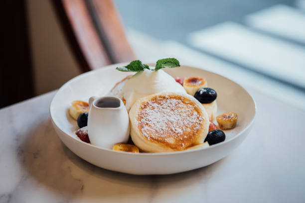
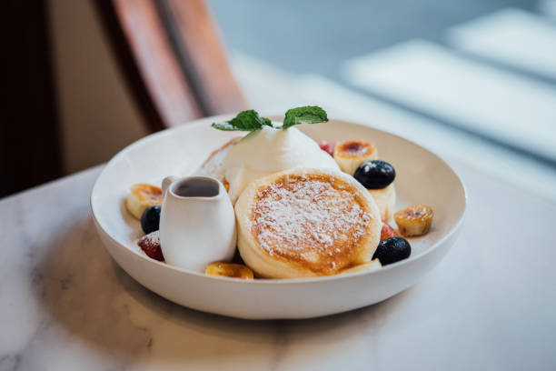

Welcome to mars
At mars, we believe in creating a warm and inviting space where
friends and family can come together to enjoy delicious food, great coffee, and memorable moments.
Our cafe is more than just a place to grab a quick bite –
it's a community hub where conversations flow as freely as the coffee.
Our Story
Founded in 1970 e.c,
mars was born out of a passion for good food and a love for bringing people together.
Our journey started with a simple idea: to create a welcoming space where everyone feels at home.
Over the years, we have grown into a beloved neighborhood spot
known for our friendly service, cozy atmosphere, and mouthwatering menu offerings.
Our Philosophy
At mars,
we are committed to using the finest ingredients to create dishes that delight the senses.
From our freshly brewed coffee to our homemade pastries and hearty sandwiches,
every item on our menu is crafted with care and attention to detail. We source
Visit Us
Located in the heart of mekelle,
mars is open 24 hours for breakfast, lunch, and everything in between.
Whether you're stopping by for a quick caffeine fix or settling in for a leisurely brunch with friends,
we look forward to welcoming you with open arms.
Join us at mars and experience the perfect blend of flavors, aromas,
and conversations that make every visit a special one.
—
Feel free to customize
this text to reflect the unique story and ethos of your cafe.
This "About Cafe" section can help visitors learn more about your establishment,
its values, and what sets it apart from other cafes in the area.
 
